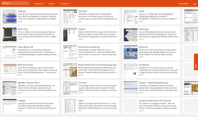

App Grid
Dieser Artikel wurde für die folgenden Ubuntu-Versionen getestet:
Ubuntu 16.04 Xenial Xerus
Zum Verständnis dieses Artikels sind folgende Seiten hilfreich:
App Grid  ist eine grafische Paketverwaltung, die insbesondere Ein- und Umsteigern eine Alternative zu Ubuntu Software bieten möchte. Das Programm zeichnet sich durch eine sehr einfache Bedienung und eine vergleichsweise hohe Geschwindigkeit aus. Es wurde unter der BSD-Lizenz (2-Klausel-BSD) veröffentlicht.
ist eine grafische Paketverwaltung, die insbesondere Ein- und Umsteigern eine Alternative zu Ubuntu Software bieten möchte. Das Programm zeichnet sich durch eine sehr einfache Bedienung und eine vergleichsweise hohe Geschwindigkeit aus. Es wurde unter der BSD-Lizenz (2-Klausel-BSD) veröffentlicht.
Das Programm greift ausschließlich auf die bereits im System hinterlegten Paketquellen zu. Eine Möglichkeit zur Konfiguration der Paketquellen ist nicht vorhanden. Fortgeschrittenen wird der Einsatz von Synaptic oder die Paketverwaltung auf der Kommandozeile empfohlen.

Installation¶
 Das Programm ist nicht in den offiziellen Paketquellen enthalten. Daher muss man auf das "Personal Packages Archiv" (PPA) [1] der Entwickler ausweichen.
Das Programm ist nicht in den offiziellen Paketquellen enthalten. Daher muss man auf das "Personal Packages Archiv" (PPA) [1] der Entwickler ausweichen.
PPA¶
Adresszeile zum Hinzufügen des PPAs:
ppa:appgrid/stable
Hinweis!
Zusätzliche Fremdquellen können das System gefährden.
Ein PPA unterstützt nicht zwangsläufig alle Ubuntu-Versionen. Weitere Informationen sind der  PPA-Beschreibung des Eigentümers/Teams appgrid zu entnehmen.
PPA-Beschreibung des Eigentümers/Teams appgrid zu entnehmen.
Damit Pakete aus dem PPA genutzt werden können, müssen die Paketquellen neu eingelesen werden.
Nach dem Aktualisieren der Paketquellen kann folgendes Paket installiert werden [2]:
appgrid (ppa)
 mit apturl
mit apturl
Paketliste zum Kopieren:
sudo apt-get install appgrid
sudo aptitude install appgrid
Verwendung¶
Das Programm kann bei Ubuntu-Varianten mit einem Anwendungsmenü über den Eintrag „System -> App Grid“ gestartet werden [3]. Alternativ kann man den folgenden Befehl verwenden:
/usr/share/appgrid/appgrid.py
Beim ersten Programmstart wird man gebeten, die Lizenzbedingungen zu akzeptieren. Standardmäßig öffnet sich das Programm bildschirmfüllend und zeigt eine Programmübersicht. Neben einem Vorschaubild wird ein beschreibender Text in Deutsch oder Englisch und eine Bewertung mit Sternen angezeigt. Die Bewertung in drei Stufen beruht auf Benutzerkommentaren.
Ein Mausklick  auf ein Programm zeigt ein größeres Vorschaubild und neben weiteren Detailinformationen die konkrete Bewertung durch einzelne Benutzer. Mittels der Schaltfläche „Installieren“ am oberen Fensterrand wird das Programm inklusive evtl. Abhängigkeiten heruntergeladen und installiert. Hierzu sind – wie bei Ubuntu üblich – Root-Rechte erforderlich. Es öffnet sich ein entsprechendes Abfragefenster.
auf ein Programm zeigt ein größeres Vorschaubild und neben weiteren Detailinformationen die konkrete Bewertung durch einzelne Benutzer. Mittels der Schaltfläche „Installieren“ am oberen Fensterrand wird das Programm inklusive evtl. Abhängigkeiten heruntergeladen und installiert. Hierzu sind – wie bei Ubuntu üblich – Root-Rechte erforderlich. Es öffnet sich ein entsprechendes Abfragefenster.
Um ein bestimmtes Programm in den aus mehr als 30.000 Einzelpaketen bestehenden Paketquellen zu finden, werden verschiedene Möglichkeiten angeboten:
„Suchen“
„Kategorie“
„Status“
„Sortieren“
Eine Begrenzung auf „Kategorie“, „Status“ und „Sortieren“ hebt man durch die erneute Auswahl der Schaltfläche wieder auf.
Suchen¶
Am linken oberen Fensterrand befindet sich ein Suchfeld, um die Auswahl über den Programmnamen einzugrenzen. Die Suche ist darüber hinaus die einzige Möglichkeit, Programme für die Kommandozeile zu finden – was in Ubuntu Software nicht möglich ist. Um zur ursprünglichen Liste zurückzukehren, löscht man den Inhalt des Suchfelds wieder.
Kategorie¶
Verschiedene Kategorien gliedern die Programmauswahl nach folgenden Kriterien:
„Entwicklungswerkzeuge“ - für Programmierer/innen
„Kunst“ - nicht ganz korrekte Übersetzung für „Multimedia“
„Produktivität“ - beinhaltet u.a. Büro-Anwendungen
„Spiele“
„System“ - Systemverwaltung
„Wissenschaftlich“ - Schule und Studium bis hin zu wissenschaftlichen Spezialprogrammen
Status¶
Hier gibt es nur die Möglichkeit, ausschließlich bereits installierte Programme anzuzeigen.
Sortieren¶
Als einzige Sortierung ist eine nach Bewertung verfügbar: Beliebte Programme stehen ganz vorne.
Anmelden¶
Diese Schaltfläche am oberen rechten Fensterrand dient der Anmeldung bei Ubuntu One. Dieser Punkt ist für Ubuntu 16.04 und neuer nicht mehr relevant, da die Fa. Canonical den früher vorhandenen kommerziellen Vertrieb von Software über das Ubuntu Apps Directory für diese Ubuntu-Versionen eingestellt hat (siehe auch Software-Center).
Feedback¶
Über einen Smiley ganz rechts außen kann Kontakt mit den Programmautoren aufgenommen werden. Dies kann eine Rückmeldung zum Programm oder eine Spende sein, mit der man die Arbeit der Entwickler honoriert.
Problembehebung¶
Vorschaubilder¶
Nicht zu jedem Programm ist ein Vorschaubild sofort verfügbar. Oft wird dieses erst beim Aufruf der Programmdetails mit einer mehr oder weniger deutlichen Verzögerung heruntergeladen und angezeigt. Manchmal ist auch gar keins verfügbar und erscheint dann auch nach längerem Warten nicht.
Die von App Grid heruntergeladenen Vorschaubilder zu einzelnen Programmen werden im Ordner ~/Downloads/appgrid/ im Homeverzeichnis gespeichert. Dieser Ordner wird bei einer Deinstallation nicht entfernt und muss ebenso wie der Ordner ~/.config/appgrid/ vom Benutzer selbst gelöscht werden.
Links¶
App Grid
auf Launchpad
App Grid Is A Fast And Clean Alternative To Ubuntu Software Center
- Blogbeitrag, 07/2014App Grid: New Lightweight Ubuntu Software Center Alternative
- Blogbeitrag, 09/2013Paketverwaltung
 Übersichtsartikel
Übersichtsartikel
- Erstellt mit Inyoka
-
 2004 – 2017 ubuntuusers.de • Einige Rechte vorbehalten
2004 – 2017 ubuntuusers.de • Einige Rechte vorbehalten
Lizenz • Kontakt • Datenschutz • Impressum • Serverstatus -
Serverhousing gespendet von